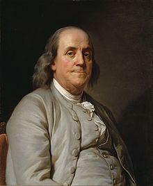

Benjamin Franklin
1706-1790
From Wikipedia, the free encyclopedia

Benjamin Franklin FRS FRSA FRSE (January 17, 1706 – April 17, 1790) was an American polymath who was active as a writer, scientist, inventor, statesman, diplomat, printer, publisher and political philosopher.
Among the leading intellectuals of his time, Franklin was one of the Founding Fathers of the United States, a drafter and signer of the United States Declaration of Independence, and the first United States postmaster general.
As a scientist, he was a major figure in the American Enlightenment and the history of physics for his discoveries and theories regarding electricity. As an inventor, he is known for the lightning rod, bifocals, and the Franklin stove, among other inventions. He founded many civic organizations, including the Library Company, Philadelphia's first fire department, and the University of Pennsylvania. Franklin earned the title of "The First American" for his early and indefatigable campaigning for colonial unity, initially as an author and spokesman in London for several colonies.
As the first United States ambassador to France, he exemplified the emerging American nation. Franklin was foundational in defining the American ethos as a marriage of the practical values of thrift, hard work, education, community spirit, self-governing institutions, and opposition to authoritarianism both political and religious, with the scientific and tolerant values of the Enlightenment. In the words of historian Henry Steele Commager, "In Franklin could be merged the virtues of Puritanism without its defects, the illumination of the Enlightenment without its heat."
Franklin has been called "the most accomplished American of his age and the most influential in inventing the type of society America would become." Franklin became a successful newspaper editor and printer in Philadelphia, the leading city in the colonies, publishing the Pennsylvania Gazette at age 23. He became wealthy publishing this and Poor Richard's Almanack, which he authored under the pseudonym "Richard Saunders".
After 1767, he was associated with the Pennsylvania Chronicle, a newspaper that was known for its revolutionary sentiments and criticisms of the policies of the British Parliament and the Crown. He pioneered and was the first president of Academy and College of Philadelphia which opened in 1751 and later became the University of Pennsylvania. He organized and was the first secretary of the American Philosophical Society and was elected president in 1769. Franklin became a national hero in America as an agent for several colonies when he spearheaded an effort in London to have the Parliament of Great Britain repeal the unpopular Stamp Act. An accomplished diplomat, he was widely admired among the French as American minister to Paris and was a major figure in the development of positive Franco–American relations. His efforts proved vital for the American Revolution in securing shipments of crucial munitions from France. He was promoted to deputy postmaster-general for the British colonies on August 10, 1753, having been Philadelphia postmaster for many years, and this enabled him to set up the first national communications network. He was active in community affairs and colonial and state politics, as well as national and international affairs.
From 1785 to 1788, he served as governor of Pennsylvania. He initially owned and dealt in slaves but by the late 1750s, he began arguing against slavery, became an abolitionist, and promoted education and the integration of African Americans into U.S. society. His life and legacy of scientific and political achievement, and his status as one of America's most influential Founding Fathers, have seen Franklin honored more than two centuries after his death on the $100 bill, warships, and the names of many towns, counties, educational institutions, and corporations, as well as numerous cultural references and with a portrait in the Oval Office.